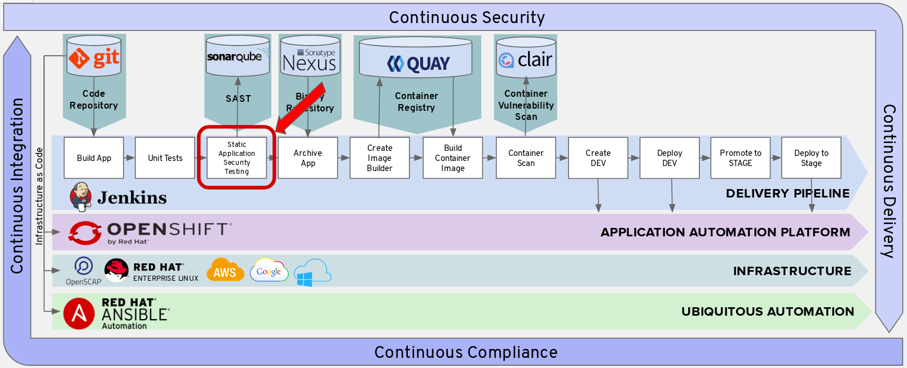

Static Application Security Testing
Next we will add a Code Analysis Stage into the pipeline.

We will leverage the Maven Sonar plugin to run SonarQube scanning against our source code.
SonarQube is an open source static code analysis tool that we can use to automate running security scans against your source code to further improve the security of your application. Every time you check-in code, SonarQube will scan the quality and perform a threat analysis of that code.
We leverage the sonarqube maven plugin and specify the maven goal "sonar:sonar" to run our project leveraging the sonarqube api.
SonarQube's security rules originate from these standards:
CWE Database - Common Weakness Enumeration (CWE™) is a formal list or dictionary of common software weaknesses that can occur in software's architecture, design, code or implementation that can lead to exploitable security vulnerabilities.
SANS Top 25 - The SANS Top 25 list is a collection of the 25-most dangerous errors listed in the CWE, as compiled by the SANS organization.
OWASP Top 10 - The OWASP Top 10 is a list of broad categories of weaknesses, each of which can map to many individual rules.
Append to Jenkins Pipeline Configuration
In Builds > Pipelines > tasks-pipeline > Actions > Edit

Append the text below to the bottom of the Jenkins Pipeline Configuration. Please make sure to append to the beginning of the next line.
stage('Code Analysis') {
steps {
script {
sh "${mvnCmd} sonar:sonar -Dsonar.host.url=http://sonarqube:9000 -DskipTests=true"
}
}
}
SonarQube Dashboard
Once we build the full pipeline and run it, we will log into SonarQube and view the various metrics, stats, and code coverage as seen from the screenshot below.

Test Your Pipeline
If you'd like to do a test of first pipeline stage, add the following brackets at the end of your Jenkinsfile. Make sure to append to the beginning of the last line.
}
}
Save your Jenkinsfile.
Go back to Builds > Pipelines
Click Start Pipeline
Delete Brackets
Please delete the brackets you just added once testing is complete. We can add them later if you'd like to test your pipeline as you go along.
}
}
Click Save